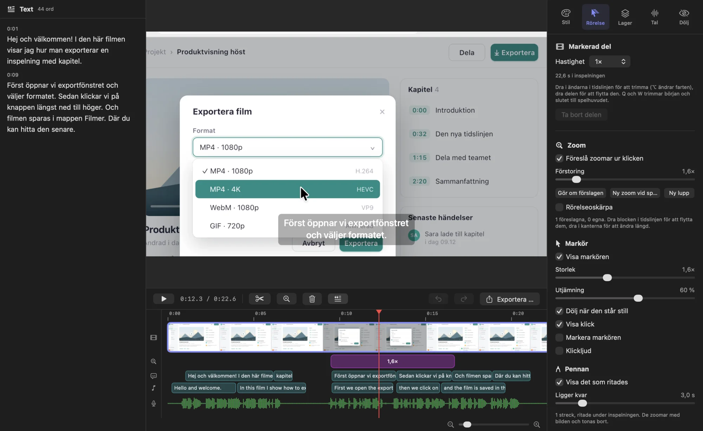
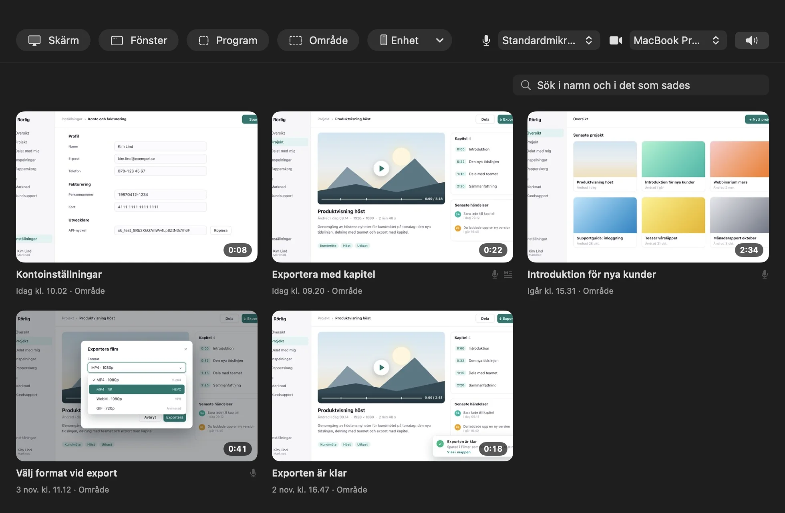
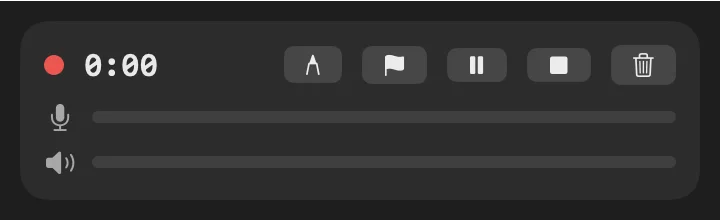
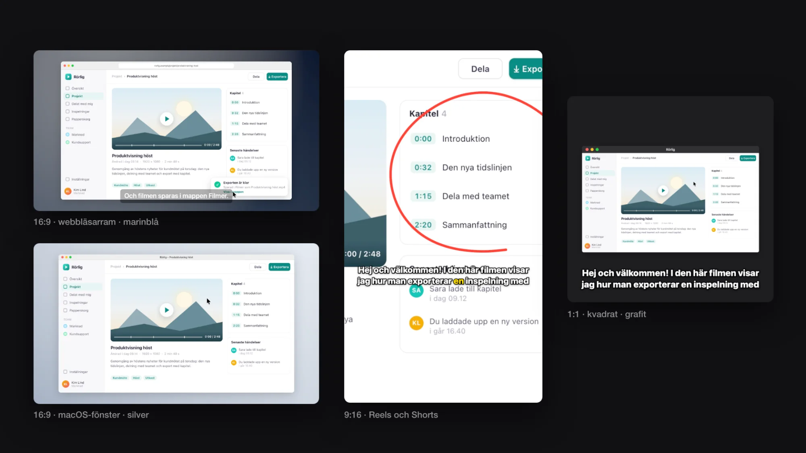
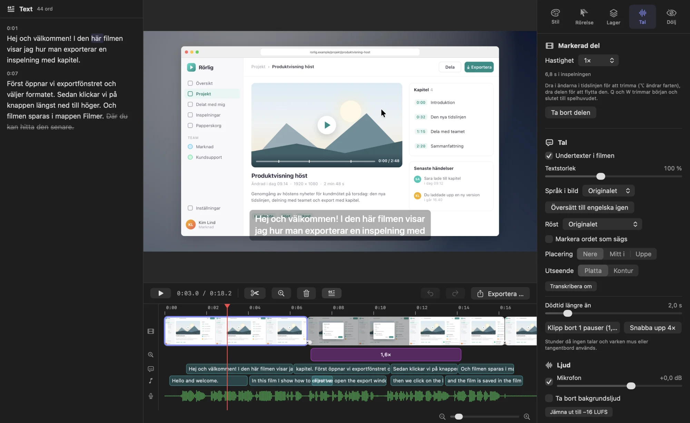
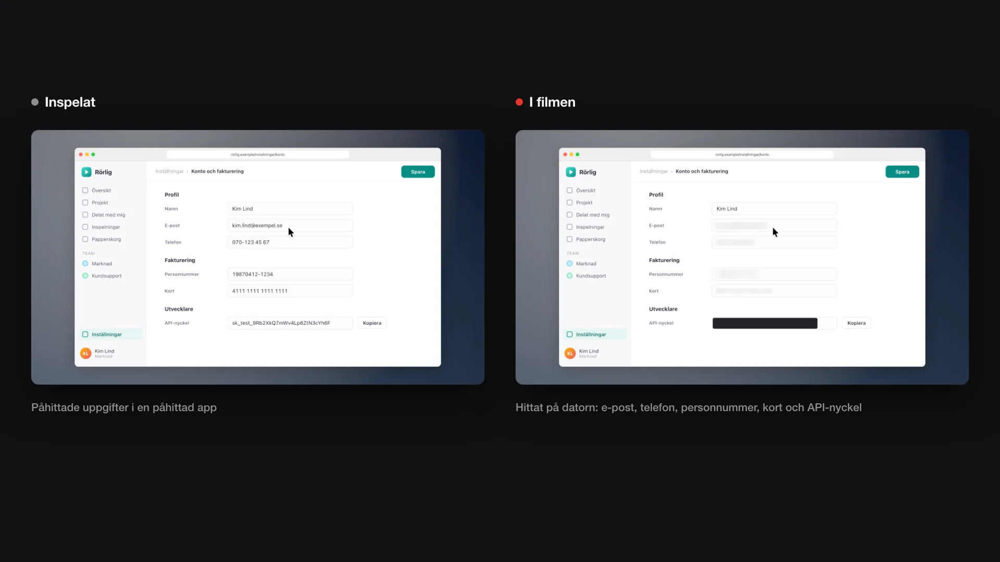

Spela in
Hela skärmen, ett fönster, ett program, ett område – eller en iPhone via kabel. Mikrofonen, datorljudet, varje app och kameran hamnar på egna spår.
För macOS · Öppen källkod
Bjarbys skärminspelare sparar inspelningen som data: skärmen utan markör, varje ljud på sitt eget spår och varje klick som en händelse. Zoom, markör, bakgrund och undertexter läggs på i redigeraren – och går alltid att ändra.
Gratis · macOS 26 eller senare · Apple silicon

Rösten i filmen är en AI-version av Anders röst.
Allt du spelar in finns kvar. Allt du lägger till går att ändra.
Hela skärmen, ett fönster, ett program, ett område – eller en iPhone via kabel. Mikrofonen, datorljudet, varje app och kameran hamnar på egna spår.
Zoom där du klickar och skriver, en mjuk markör, bakgrund, ram och undertexter. Allt är förslag som du flyttar, ändrar eller tar bort.
MP4, 4K HDR, AV1, ProRes med genomskinlig bakgrund, GIF – eller en färdig mapp till Final Cut Pro och DaVinci Resolve.
Inspelning
Varje spår skrivs i en egen fil, i fragment om två sekunder. Kraschar något går inspelningen att spela fram till sista fragmentet och räddas vid nästa start.


Redigeraren
Zoomar föreslås ur dina klick och där du skriver. En fjäderdriven kamera håller markören i en säker zon och tittar framåt – samma bana i förhandsvisningen som i exporten.
Bred för YouTube, stående för Reels och Shorts, kvadrat – med eller utan fönsterram. Inspelningen är densamma; bara besluten skiljer.

Tal
Talet transkriberas på din Mac med whisper.cpp och KB-Whispers svenska modeller. Stryk ett ord i texten så försvinner det ur filmen – det strukna syns kvar och går att ta tillbaka.
.srt, nere, mitt i eller uppe.
Dölj
E-postadresser, telefonnummer, personnummer, kortnummer och API-nycklar letas upp i bilden med textigenkänning på datorn. Välj oskärpa, pixlar eller en fylld ruta – maskerna följer texten när den rullar.

Lager och kapitel
Rubrikkort, pilar som ritar fram sig, markeringar runt knappen du klickade på, faktarutor, QR-koder, bilder och videoinslag. Kapitlen följer med i filen och blir tidsstämplar till YouTube.
AI-producenten
Appen har en MCP-server inbyggd. Producenten klipper bort dödtid och felstarter i pauserna mellan orden, sätter zoomar, kapitel, rubrikkort och markeringar, kontrollerar varje färdig ruta mot reglerna – och lämnar ett leveransbrev. Besluten är data som du kan ändra.
Producera senaste inspelningen. Den ska bli en kort instruktionsfilm.
Klart. Jag har klippt bort dödtiden och felstarterna, satt zoomar på klicken och delat filmen i kapitel. Markeringen sitter på knappen Exportera – jag har kontrollerat det i de färdiga rutorna. Leveransbrevet ligger i paketet, med två saker jag vill att du tar ställning till.
Exempel på ett samtal. Producenten frågar alltid innan något kostar pengar, och laddar aldrig upp något utan ditt ja.
Export och delning
⌘-klicka flera format så exporteras alla på en gång. Kapitlen följer med i MP4, MOV, MKV och M4A, och varje ljudkälla kan bli en egen WAV-fil till Logic eller Resolve.
Ladda upp till YouTube (alltid som privat film) eller Dropbox med din egen app-registrering, eller till din egen S3-hink. Ingen tjänst i mitten. Insticksprogram i valfritt språk kan köras efter varje inspelning eller export.
kill -9 vid cirka 10 sekunderHur siffrorna togs står i docs/VERIFIERAD-STACK.md.
Transkribering, maskning och ansiktsigenkänning körs på datorn. Det finns inget konto och ingen server. Dubbning och AI-producenten går genom dina egna verktyg och nycklar – och bara när du ber om det.
Kräver macOS 26 eller senare på en Mac med Apple silicon.
Version 0.1.0 · zip-fil, 6,7 MB · signerad med Developer ID och notariserad av Apple
Gränssnittet är på svenska, med engelska som översättning. AV1-exporten kräver ffmpeg.
Kräver Xcode 26.1. Talet byggs med whisper.cpp (cmake).
git clone https://github.com/fltman/bjarbys-screen-recorder
cd bjarbys-screen-recorder
./scripts/build-whisper.sh ~/whisper.cpp # verktygen för talet
./scripts/build.sh # → dist/Bjarbys skärminspelare.app